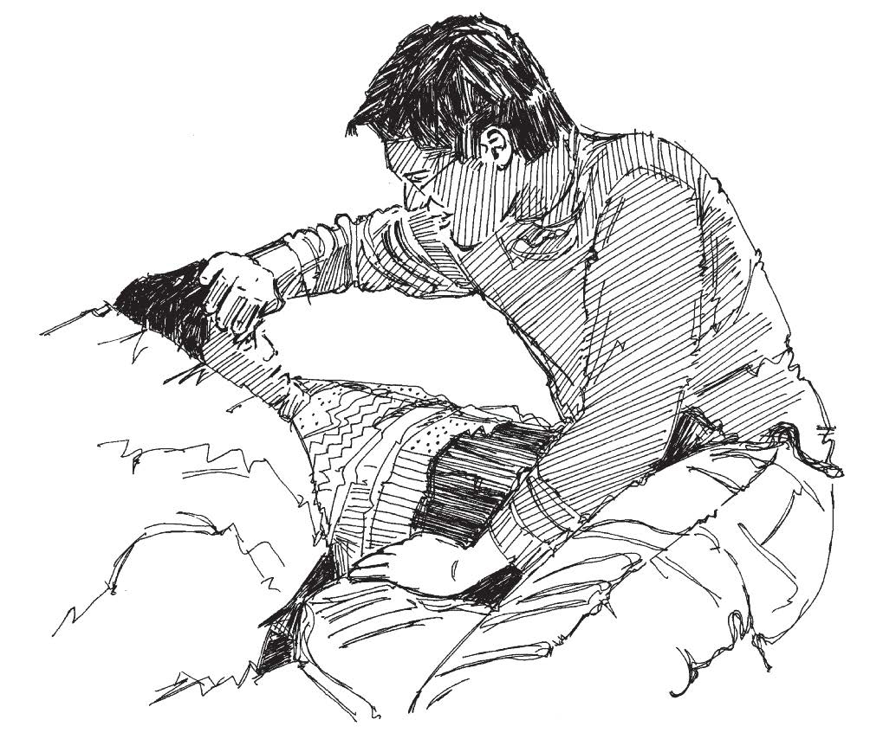

Resumen
- La fiebre está presente cuando el cuerpo de una persona se siente caliente al tacto. La fiebre es la reacción del cuerpo a la infección.
- La fiebre en niños muy pequeños y en los bebés puede ser un signo de enfermedad grave.
- La lactancia materna puede salvar la vida de los bebés y niños pequeños en las epidemias de diarrea.
- Siempre es bueno continuar amamantando en epidemias porque la leche materna es un alimento limpio, nutritivo y barato para los bebés.
Lo que necesita saber
- La fiebre es causada por la reacción del cuerpo a la infección. Nos indica que hay una infección presente.
- La fiebre es un aumento en la temperatura corporal. Hace que la persona sienta calor, puede causar escalofríos y es muy incómoda.
- La fiebre puede ser grave. Si es muy alta, puede causar convulsiones (sacudidas violentas del cuerpo) en niños pequeños.
- La fiebre puede hacer que el cuerpo pierda líquidos y se deshidrate.

Bajar la temperatura del cuerpo y beber abundante agua
¿Qué hacer?
- Verifique la condición de la persona.
- Pregunte acerca de otros síntomas, como erupción, dolor de cabeza, vómitos, tos o dolor.
- Si la fiebre es alta o si la persona ha tenido convulsiones, refiérala a un centro de salud inmediatamente.
- Si el paciente puede beber, comer y moverse: § Dele más líquidos para beber de lo habitual.
- Enfríe el cuerpo al:
- Aliente a que los bebés amamanten lo más posible. § Fomente el descanso.
- Aliente a los cuidadores a dar alimentos nutritivos.
- Eliminar el exceso de ropa.
- Pasando una esponja o un paño empapado en agua tibia (templada) por el cuerpo y la frente.
- Bañando a los bebés en agua templada. Obsérvelos de cerca por convulsiones.
Si la fiebre no desaparece o empeora, busque la ayuda de un profesional de la salud.
En las áreas afectadas por una epidemia, la fiebre puede indicar que una persona tiene la enfermedad en cuestión. Si la fiebre es uno de los síntomas de la enfermedad (como en la meningitis, la malaria o el dengue), debe reportar el caso como parte de sus actividades de vigilancia y seguir las acciones indicadas para la prevención y el tratamiento.